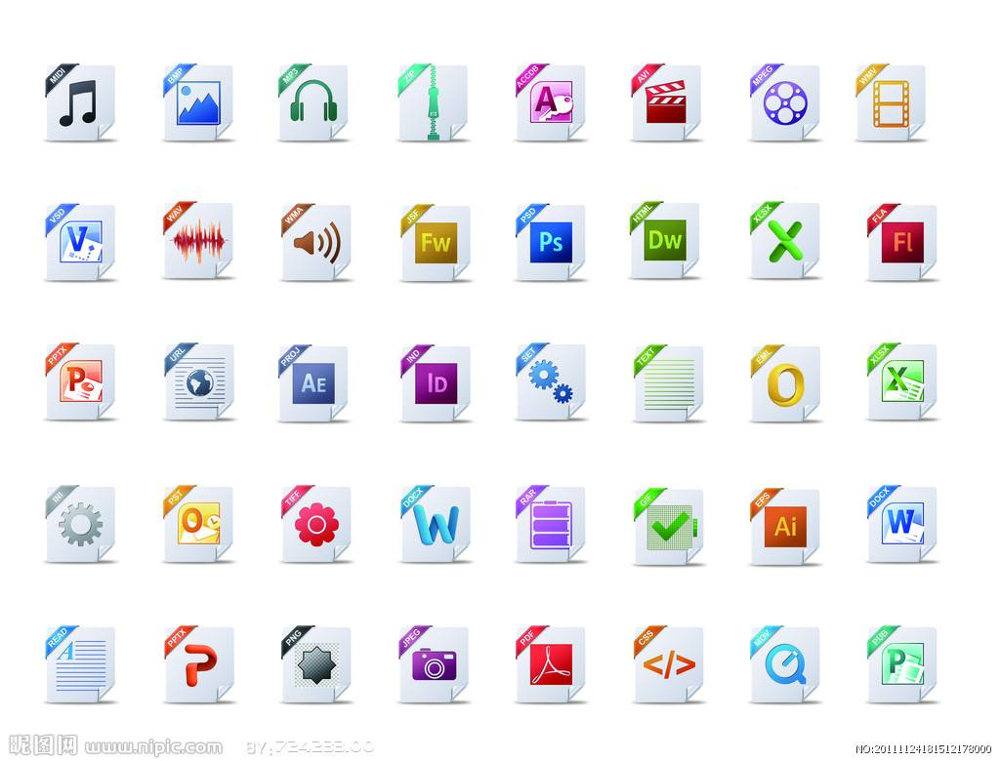

<!DOCTYPE html>
<html lang="en">
<head>
    <meta charset="UTF-8">
    <title>Title</title>
    <!--    改变页面中所有超级链接的默认打开方式和基础路径-->
    <base target="dis"/>
    <style type="text/css">
        #imgList img {
            width: 180px;
            height: 135px;
        }

        #disZone img{
            width: 800px;
            height: 600px;
        }
        #des{
            position: absolute;
            bottom: 0;
            width: 100%;
            height: 3em;
            line-height: 3em;
            font-size: 2em;
            font-weight: bolder;
            background-color: rgba(0,0,0,0.3);
            color: white;
        }
        .myRelative{
            position: relative;
        }
    </style>
</head>
<body>
<div id="disZone">
    <!--    如果不支持JavaScript，则显示内部框架，如果支持JavaScript则该内部框架消失-->
    <iframe src="img/05.jpg" scrolling="no" width="800" height="600" name="dis"></iframe>
    <!--    如果在支持JavaScript的环境下，动态创建大图显示区域-->
    <!--    <div id="bigZone">-->
    <!--        -->
    <!--        <div id="des">文字介绍</div>-->
    <!--    </div>-->
</div>
<div id="imgList">
    <a href="img/01.jpg"></a>
    <a href="img/02.jpg"></a>
    <a href="img/03.jpg"></a>
    <a href="img/04.jpg"></a>
</div>
<script>
    //合理的让代码执行,确保页面源代码和相应资源全部准备完毕时执行
    //能否将window的onload分开编写,如果直接使用多次赋值函数指针方式，只有最后一个才能生效
    //动态加载的应用接口，如果以前存在onload事件处理函数则累加，则直接让onload事件做处理

    //动态加载函数的调用
    //1 删除内部框架
    try {
        //djjdjd;   //故意试错
        addOnloadEvent(removeFrame);    //移除内部框架
        //2 创建大图展示区
        addOnloadEvent(createBigPicZone);   //创建大图区
        //3 给小图列表区添加事件
        addOnloadEvent(imgBindEvent);
    }catch (e) {
        console.log(e);
    }

    function imgBindEvent(){
        if(!(oImgListZone = document.querySelector("#imgList"))) return false;  //对象检测
        //不建议使用的方式，缺陷就是如果通过动态方式添加的缩略图将不能响应事件
        /*var imgLists = oImgListZone.querySelectorAll("a");  //限定前提，必须是a
        for (let i = 0; i < imgLists; i++) {
            imgLists[i].onclick = func1;
        }*/
        oImgListZone.onclick = changeImg;
    }

    function changeImg(eve) {
        if(!(oImg = document.querySelector("#bigZone>img"))) return false;  //对象检测
        if(!(oDes = document.querySelector("#des"))) return false;  //对象检测
        console.log("changeImg被执行了");
        // console.log(eve.target);
        //获取链接到的真实资源地址
        // console.log(eve.target.parentElement);
        var sImgHref = eve.target.parentElement.getAttribute("href");
        oImg.setAttribute("src",sImgHref);
        oDes.innerText = eve.target.getAttribute("title");
        //阻止超链接的默认行为
        eve.preventDefault();
        // return false;
    }

    function createBigPicZone() {
        // console.log("createBigPicZone被调用了");
        //获取创建的父区域对象
        if(!(oDisZone = document.querySelector("#disZone"))) return false;  //对象检测
        //创建碎片节点
        var oDiv = document.createElement("div");
        oDiv.setAttribute("id","bigZone");
        var oImg = document.createElement("img");
        oImg.setAttribute("src","img/05.jpg");
        var oDes = document.createElement("div");
        oDes.setAttribute("id","des");
        oDes.innerText = "封面图";
        //oDiv.setAttribute("class","myRelative");//缺陷就是绝对赋值方式，对于class样式特性来讲有欠缺，应该能够追加和移除指定样式
        addClass(oDiv,"myRelative");//追加样式


        //组装节点
        oDiv.prepend(oDes);
        oDiv.prepend(oImg);
        oDisZone.appendChild(oDiv);
    }

    function addClass(oObj,sClass) {
        // alert("haha");
        if(!oObj || !sClass || sClass=="") return false;
        //1 先获取对象本身的class属性
        var sClassList = oObj.getAttribute("class");
        //分割为数组
        var aClassList = sClassList.split(" ");
        //遍历匹配
        for (let i = 0; i < aClassList.length; i++) {
            if(aClassList[i] != sClass){//不包含该样式时，追加
                aClassList.push(sClass);
            }
        }
        // 转换为字符串
        oObj.setAttribute("class",aClassList.join(" "));
    }

    function removeClass(oObj,sClass) {
        if(!oObj || !sClass || sClass=="") return false;
        //1 先获取对象本身的class属性
        var sClassList = oObj.getAttribute("class");
        //分割为数组
        var aClassList = sClassList.split(" ");
        //遍历匹配
        for (let i = 0; i < aClassList.length; i++) {
            if(aClassList[i] == sClass){//如果能够匹配到该样式
                aClassList.splice(i,1);
            }
        }
        // 转换为字符串
        oObj.setAttribute("class",aClassList.join(" "));
    }

    function removeFrame() {
        //获取内部框架的DOM对象
        if (!(oFrame = document.querySelector("#disZone>iframe"))) return false;    //对象检测
        //如果存在该对象则删除之
        // console.log(oFrame);
        oFrame.remove();
    }


    //onload事件的动态加载函数
    function addOnloadEvent(func) {
        //首先应该先获得当前的window.onload
        var oldLoad = window.onload;
        // console.log(typeof oldLoad);
        if ((typeof oldLoad) == 'Function') {
            window.onload = function () {
                oldLoad();
                func();
            }
        } else {
            func();
        }
    }

</script>
</body>
</html>